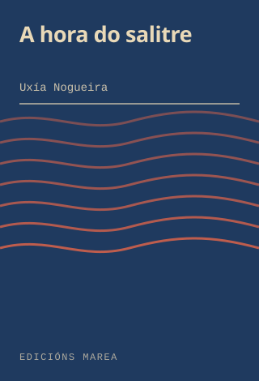
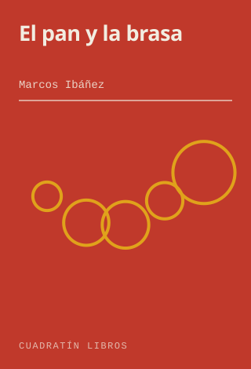
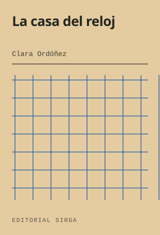
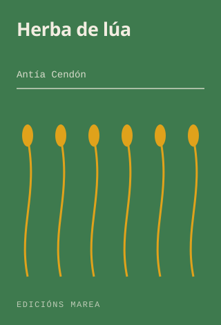
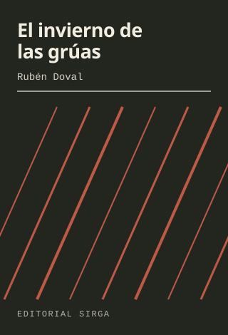
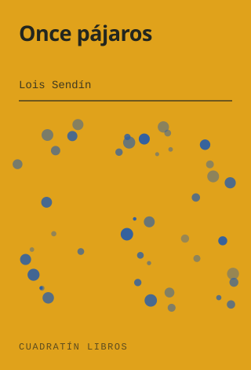

Lugo · librería de barrio · desde 2014
Un libro se elige por el lomo
Nadie entra pidiendo un ISBN. Se entra, se pasa el dedo por la balda y se para donde se para. Toda esta página está hecha de eso: pasa el ratón por los lomos —o tócalos— y saldrán a saludar.
- A hora do salitre Nogueira
- Cuaderno de mareas Ferrol
- El pan y la brasa Ibáñez
- Trece inviernos Salgado
- La casa del reloj Ordóñez
- Camiño de sirga Barreiro
- Tinta y ceniza Arjona
- El último tren Vilar
- Herba de lúa Cendón
- Los días contados Meana
- Un mapa sin costas Quintá
- La sal en la lengua Roca
- Cartas al farero Deibe
- Orballo Pousa
- El taller de las cosas rotas Lamas
- Nadie llama dos veces Ferrín
- Cuarto menguante Alborés
- El invierno de las grúas Doval
- Once pájaros Sendín
- La lengua del río Cotelo
- Ruído branco Xesteira
- Antes del incendio Beade
- El hueco del armario Varela
- Mar de fondo Regueiro
- Los nombres del viento del norte Piñeiro
- Tres de la tarde Baltar
- El cuaderno azul Presas
- Vento mareiro do sur Caramés
- A hora do salitre Nogueira
- Cuaderno de mareas Ferrol
- El pan y la brasa Ibáñez
- Trece inviernos Salgado
- La casa del reloj Ordóñez
- Camiño de sirga Barreiro
- Tinta y ceniza Arjona
- El último tren Vilar
- Herba de lúa Cendón
- Los días contados Meana
- Un mapa sin costas Quintá
- La sal en la lengua Roca
- Cartas al farero Deibe
- Orballo Pousa
- El taller de las cosas rotas Lamas
- Nadie llama dos veces Ferrín
- Cuarto menguante Alborés
- El invierno de las grúas Doval
Estantería de la casa · títulos inventados para esta demostración
01 — La mesa de novedades
Seis que hemos leído
En la mesa de la entrada no cabe todo, así que ponemos lo que hemos leído y podemos defender. Debajo de cada uno va escrita a mano la razón.
-

A hora do salitre
Uxía Nogueira · Edicións Marea
«Una novela de puerto, de las que huelen a rede mojada. Si te gustó el último de Sendín, este te va a durar dos noches.»
19,50 €
-

El pan y la brasa
Marcos Ibáñez · Cuadratín Libros
«Ensayo sobre la comida de aldea sin una sola receta. Se lee con hambre y se termina con ganas de llamar a casa.»
21,00 €
-

La casa del reloj
Clara Ordóñez · Editorial Sirga
«Una casa, cuatro generaciones y un reloj que nadie arregla. Lo hemos vendido catorce veces este mes y nadie ha vuelto a quejarse.»
22,90 €
-

Herba de lúa
Antía Cendón · Edicións Marea
«Poesía en galego que se entiende a la primera, que ya es bastante. Buen regalo para quien dice que no lee poesía.»
15,00 €
-

El invierno de las grúas
Rubén Doval · Editorial Sirga
«Novela negra de astillero, con más frío que sangre. Es la que le damos a quien dice que la negra ya está muy vista.»
20,00 €
-

Once pájaros
Lois Sendín · Cuadratín Libros
«Once cuentos y ni uno de relleno. El tercero lo leemos en voz alta a quien entra preguntando qué llevar.»
17,50 €
Títulos, autores, sellos y precios inventados para esta demostración. Las portadas están dibujadas en SVG para la plantilla: no reproducen ninguna edición real.
02 — El plano
Dónde está cada cosa
Son sesenta metros cuadrados y no hay pasillos perdidos. Pasa por encima de una zona del plano para ver qué guarda.
- EntradaEscaparate y la mesa que se ve desde la calle.
- Mesa de novedadesLo que hemos leído este mes, con su nota escrita a mano.
- NarrativaLa pared larga. Castellano y traducción, por orden de apellido.
- EnsayoHistoria, ciencia y el estante de libros sobre libros.
- GalegoNarrativa, ensayo y poesía en gallego, todo junto.
- PoesíaDos baldas y una silla, que es como se lee poesía.
- CómicNovela gráfica y álbum, con lo europeo separado.
- InfantilAlfombra, banqueta baja y álbum ilustrado a la altura de quien lo va a leer.
- MostradorAquí se encarga, se envuelve y se discute.
- Sala del clubAl fondo. Doce sillas y una mesa que sobrevivió a tres mudanzas.
03 — Club de lectura
El primer jueves, a las ocho
Doce plazas, sin cuota y sin tener que comprar el libro aquí. Se lee lo que se vota en diciembre y se habla hasta que cierra la puerta.
- —Cargando el calendario…
Cómo va
- Se apunta uno en el mostrador o por teléfono. Doce plazas, por orden.
- El libro se puede traer de casa, de la biblioteca o comprarlo aquí: nos da igual.
- Empieza a las 20:00 y termina a las 21:30, con rigor de reloj de estación.
- Si no te ha gustado el libro, ven igual: esas son las sesiones buenas.
Calendario calculado en vivo para la demostración: son los primeros jueves reales de los próximos meses, con títulos inventados.
04 — Encargos
Lo que no está, en 48 horas
- 01Nos dices el título, o lo que recuerdes de él. Con «la de la portada azul del año pasado» solemos apañarnos.
- 02Miramos si está en distribución y te decimos el precio y el día. Sin señal ni compromiso.
- 03Llega en 48 horas si está en almacén, o en una semana si viene de fuera. Avisamos por teléfono.
- 04Se queda guardado con tu nombre quince días. Si al final no lo quieres, no pasa nada.
05 — Quién atiende
Dos personas y una escalera
-
Olalla Cebreiro
Librera · narrativa y galego
Abrió la librería en 2014 después de doce años en una distribuidora. Es quien decide qué entra en la mesa y quien lleva el club de lectura.
-
Brais Ferradás
Librero · cómic, infantil y encargos
Lleva los encargos y la sección infantil. Tiene la habilidad de encontrar un libro con tres datos vagos y media portada recordada.
-
«Entré a por un regalo y salí con dos libros y una recomendación apuntada en un papel. Todavía guardo el papel.»
Marisa C. · clienta de los sábados
-
«Pedí un libro descatalogado sin muchas esperanzas y me llamaron a los cuatro días. Lo habían encontrado en un almacén de Vigo.»
Anxo R. · del club de lectura
-
«Mi hija va sola a la alfombra de infantil y se sienta a leer. Eso, para mí, es toda la reseña que hace falta.»
Teresa V. · vecina de la plaza
Personas y opiniones inventadas para esta demostración. No proceden de ninguna plataforma de reseñas.
06 — Visítanos
Praza do Cuadrante, 2
Comprobando el horario…
Praza do Cuadrante, 2 · bajo27001 Lugo
982 00 00 18
hola@cuadratin.example
- Lunes a viernes
- 10:00–14:00 · 17:00–20:30
- Sábado
- 10:30–14:00
- Domingo
- Cerrado
En la plaza, con la puerta a ras de suelo. Hay un banco fuera donde la gente se sienta a empezar el libro antes de irse, y no nos importa.
El mapa se carga solo si lo pides: hasta entonces esta web no llama a ningún servidor de terceros.